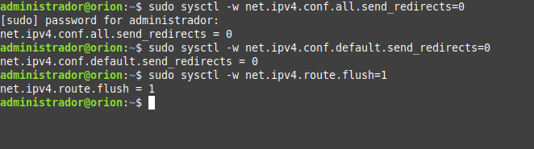
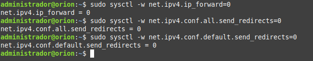
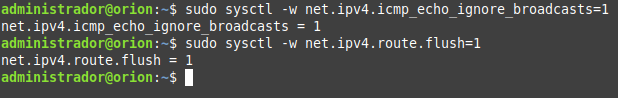
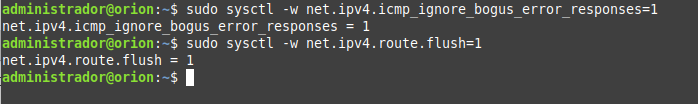
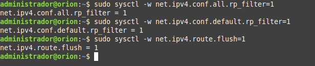
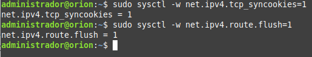

2.4.2 Configuración de red
1. Seguridad de red
Es importante establecer unas políticas de seguridad a nivel de red, para ello hay que bloquear el redireccionamiento ICMP, IP forwarding y las respuestas ICMP Broadcast. De esta manera se evita que un atacante realice ataques 'Man in the Middle', y así evitar que pueda conseguir datos confidenciales.
En los siguientes apartados, se proponen unas medidas de seguridad para la mejora de la capacidad del sistema para defenderse de ciertos tipos de ataques IP. Se deberá tener en cuenta que si el sistema debe funcionar pasando tráfico entre diferentes tarjetas, la configuración propuesta hará que deje de funcionar por lo que los parámetros de la sección “No permitir funcionamiento como router” no deberán aplicarse.
1. Bloquear los paquetes ICMP
Para bloquear los paquetes ICMP se utilizan los siguientes comandos:
administrador@orion:~$ sudo sysctl -w net.ipv4.conf.all.send_redirects=0
administrador@orion:~$ sudo sysctl -w net.ipv4.conf.default.send_redirects=0
administrador@orion:~$ sudo sysctl -w net.ipv4.route.flush=1

Bloquear ICMPs maliciosos
administrador@orion:~$ sudo sysctl -w net.ipv4.icmp_ignore_bogus_error_responses=1
2. Deshabilitar IP Forwarding - No permitir funcionamiento como router
IP Forwarding, es una vulnerabilidad que permite el reenvío de paquetes a través del host, por lo cual un atacante puede usar esta vulnerabilidad para evitar cortafuegos/enrutadores.
Para deshabilitar IP Forwarding, el comando es el siguiente:
administrador@orion:~$ sudo sysctl -w net.ipv4.ip_forward=0
administrador@orion:~$ sudo sysctl -w net.ipv4.conf.all.send_redirects=0
administrador@orion:~$ sudo sysctl -w net.ipv4.conf.default.send_redirects=0

3. Deshabilitar broadcast ICMP - Bloquear respuestas Broadcast
Es necesario deshabilitar también el broadcast ICMP, de este modo se bloquean los intentos de un atacante si consigue modificar la IP origen por la de nuestro equipo. Los comandos son los siguientes:
administrador@orion:~$ sudo sysctl -w net.ipv4.icmp_echo_ignore_broadcasts=1
administrador@orion:~$ sudo sysctl -w net.ipv4.route.flush=1

Además, hay que definir que registre solo aquellos paquetes que cumplan los estándares, para ello, se utilizan los siguientes comandos:
administrador@orion:~$ sudo sysctl -w net.ipv4.icmp_ignore_bogus_error_responses=1
administrador@orion:~$ sudo sysctl -w net.ipv4.route.flush=1

Para evitar el spoofing, es decir, para asegurar que el origen de los paquetes es el correcto, los comandos a utilizar son los siguientes:
administrador@orion:~$ sudo sysctl -w net.ipv4.conf.all.rp_filter=1
administrador@orion:~$ sudo sysctl -w net.ipv4.conf.default.rp_filter=1
administrador@orion:~$ sudo sysctl -w net.ipv4.route.flush=1

Otra opción de la que disponen los atacantes para realizar una denegación de servicio es el uso de conexiones sin terminar todo el handshake, de esta manera el servidor deja una cola de conexiones en espera, pudiendo llegar a realizar una denegación de servicio. Para evitarlo se pueden utilizar los siguientes comandos:
administrador@orion:~$ sudo sysctl -w net.ipv4.tcp_syncookies=1
administrador@orion:~$ sudo sysctl -w net.ipv4.route.flush=1

4. No permitir la alteración de las tablas de rutas
administrador@orion:~$ sudo sysctl -w net.ipv4.conf.all.accept_redirects=0
administrador@orion:~$ sudo sysctl -w net.ipv4.conf.default.accept_redirects=0
administrador@orion:~$ sudo sysctl -w net.ipv4.conf.all.secure_redirects=0
administrador@orion:~$ sudo sysctl -w net.ipv4.conf.default.secure_redirects=0
5. No permitir los paquetes enrutados en origen
administrador@orion:~$ sudo sysctl -w net.ipv4.conf.all.accept_source_route=0
administrador@orion:~$ sudo sysctl -w net.ipv4.conf.default.accept_source_route=0
6. Activar SYN Cookies
Como recomendación de seguridad, hay que acitvar en el sistema el uso de cookies SYN de TCP (protocolo de control de transmisión) IPv4. Un ataque de inundación SYN de TCP podría provocar una denegación de servicio al rellenar la tabla de conexiones TCP de un sistema con conexiones en estado SYN_RCVD. Las cookies SYN se utilizan para no realizar el seguimiento de una conexión hasta que se reciba la indicación ACK posterior, con lo que se verifica que el iniciador está intentando realizar una conexión válida y no es una fuente de inundación.
Esta técnica no cumple totalmente los estándares, pero solo se activa cuando se detecta una condición de inundación y permite la defensa del sistema mientras se sirven solicitudes válidas.
administrador@orion:~$ sudo sysctl -w net.ipv4.tcp_syncookies=1
7. Habilitar reverse path filtering
El 'reverse path filtering' se utiliza para evitar que los paquetes que llegaron a través de una interfaz salgan a través de una interfaz diferente.
administrador@orion:~$ sudo sysctl -w net.ipv4.conf.all.rp_filter=1
administrador@orion:~$ sudo sysctl -w net.ipv4.conf.default.rp_filter=1
Obra publicada con Licencia Creative Commons Reconocimiento No comercial Compartir igual 4.0